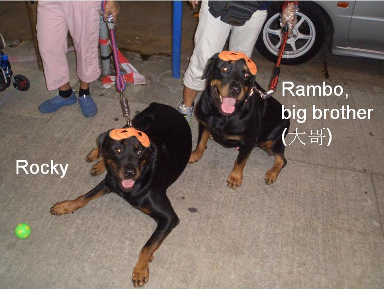

RAMBO (chapter 1)
RAMBO
A DOG WITH CANCER
How he was revived from a terminal cancer through a MIRACLE
一隻患了末期血癌的狗 – 死後復生、及顯現了奇蹟

目錄 Contents
- 1RAMBO (chapter 1)RAMBO
- 2RAMBO (Chaper 2)Rambo & Rocky The 2 Handsome Rottweiler Brothers📷 1
- 3RAMBO (Chapter 3)In May 2007, my 7.5-year-old Rottweiler, Rambo, was diagnosed by my English Vet with lymphoma (lymph node cancer), which is a kind of incurable blood cancer, and he only had maximum one month to live.📷 1 🎧 2
- 4RAMBO (Chapter 4)I gave him quality health food and best possible care. At the end of August 2007, various symptoms of Rambo's cancer started to surface – the most serious of them being non-stop bleeding from the nose, mouth and anus.📷 1 🎧 2
- 5RAMBO (Chapter 5)Internal bleeding results in non-stop bleeding, day and night, with blood dripping from Rambo's nose and mouth as if from a faucet.📷 1 🎧 2
- 6RAMBO (Chapter 6)Rambo's Critical Symptoms of Cancer🎧 2
- 7RAMBO (Chapter 7)Euthanizing Rambo🎧 2
- 8RAMBO (Chapter 8)Sifu Transferred Energy To Rambo🎧 2
- 9RAMBO (Chapter 9)THE GODS FIND THE SITUATION AMUSING🎧 2
- 10RAMBO (Chapter 10)Previous Critical Symptoms of Cancer Disappeared📷 11 🎧 2
- 11RAMBO (Chapter 11)Rambo Was Miraculously Revived!🎧 2
- 12RAMBO (Chapter 12)Rambo was absolutely as bright and alert as a normal healthy dog (the one with orange collar is Rambo).🎧 2 🎬 1
- 13RAMBO (Chapter 13)How Rambo could RUNNNNNN!!!!!!🎬 1
- 14RAMBO (Chapter 14)Transfer Of Energy & Life Force Between Sifu & Rambo🎧 2
- 15RAMBO (Chapter 15)RAMBO DIED IN FRAGILITY AT HOME🎧 2
- 16RAMBO (Chapter 16)RAMBO'S REVIVAL – A MIRACLE🎧 2